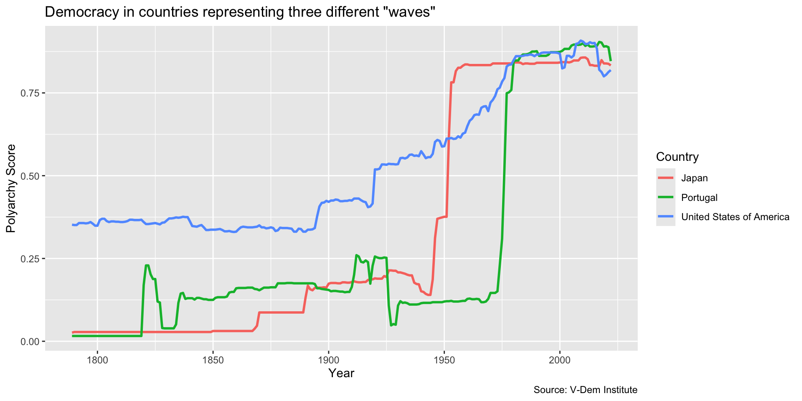
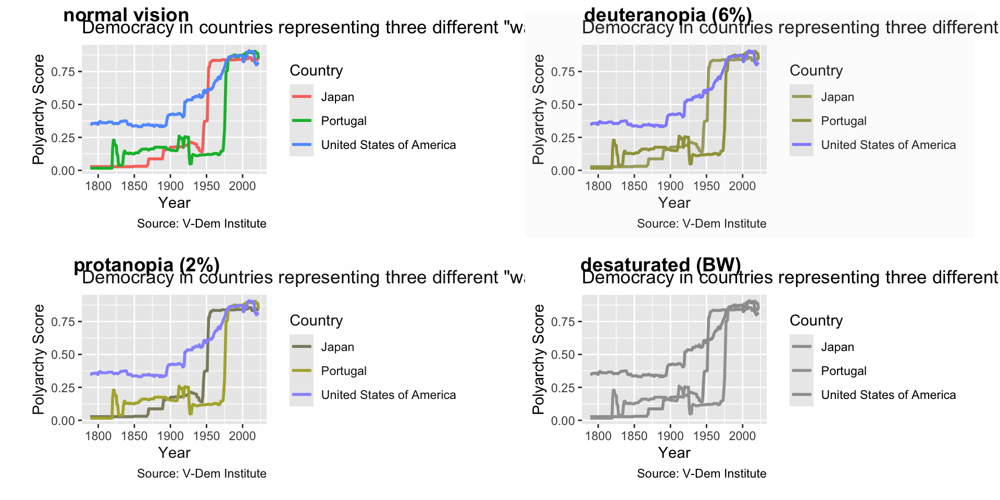
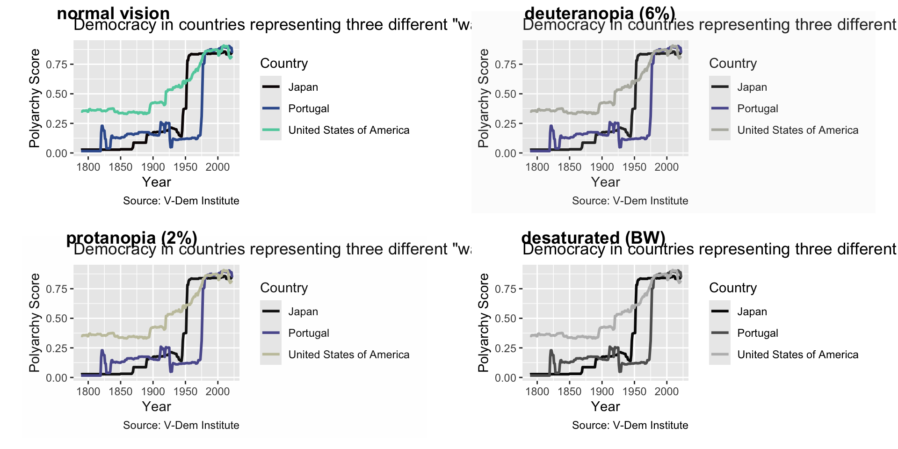
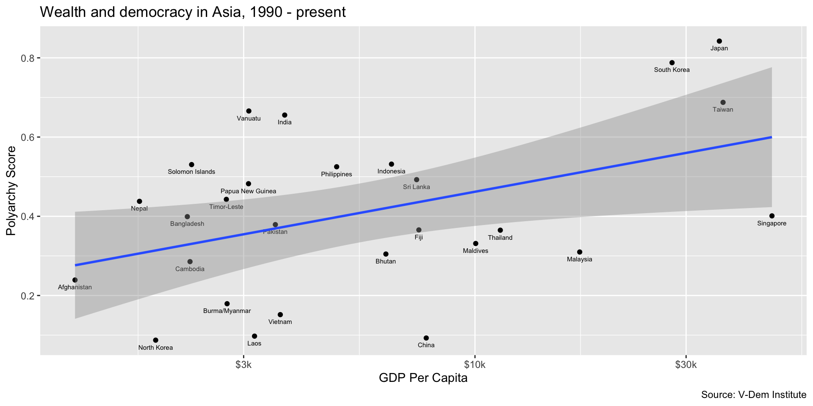

# in this ggplot() call, we add a third dimension for line color
ggplot(dem_waves_ctrs, aes(x = year, y = polyarchy, color = country)) +
geom_line(linewidth = 1) + # our geom is a line with a width of 1
labs(
x = "Year",
y = "Polyarchy Score",
title = 'Democracy in countries representing three different "waves"',
caption = "Source: V-Dem Institute",
color = "Country" # make title of legend to upper case
) +
scale_color_viridis_d(option = "mako", end = .8) # use viridis color paletteData Viz Best Practices
Make Your Visualizations Accessible
February 7, 2025
Line Chart from Last Class
Problem
Color Blindness
- Color Vision Deficiency (CVD) or color blindness affects 8 percent of men and 1 in 200 women
- There are different types of CVD but most common is red-green color blindness
- Therefore, don’t include red and green in the same chart!
- Look for color blind safe palettes
Solution: Use a colorblind safe color scheme like viridis…
Use scale_color_viridis_d() in this case to specify the viridis color scheme…
Better!
Your Turn!
- See this reference to view different palettes and options
- Also check out the paletteer package for easy access to many more palettes
- Use
scale_color_viridis_d()to specify a viridis color scheme
10:00
Scatter Plot Setup
Scatter Plot Example
Scatter Plot Example
ggplot(dem_summary_ctry, aes(x = gdp_pc, y = polyarchy)) +
geom_point(aes(color = region)) +
geom_smooth(method = "lm", linewidth = 1) +
scale_x_log10(labels = scales::label_number(prefix = "$", suffix = "k")) +
labs(
x= "GDP per Capita",
y = "Polyarchy Score",
title = "Wealth and democracy, 1990 - present",
caption = "Source: V-Dem Institute",
color = "Region"
) +
scale_color_viridis_d(option = "mako", end = .8)Continuous Color Scales
Use scale_color_viridis_c()
ggplot(dem_summary_ctry, aes(x = gdp_pc, y = polyarchy)) +
geom_point(aes(color = flfp)) +
geom_smooth(method = "lm", linewidth = 1) +
scale_x_log10(labels = scales::label_number(prefix = "$", suffix = "k")) +
labs(
x= "GDP per Capita",
y = "Polyarchy Score",
title = "Wealth and democracy, 1990 - present",
caption = "Source: V-Dem Institute",
color = "FLFP"
) +
scale_color_viridis_c(option = "mako", end = .8)Fill vs. Color
- Use color (e.g.
color =orscale_color_*) to modify the color of points, lines, or text. - Commonly applied to:
- Scatter plots
- Line charts
- Text elements
Fill vs. Color
- Use fill (e.g.
fill =orscale_fill_*) to modify the fill color of shapes like bars, boxes, or polygons. - Commonly applied to:
- Bar charts
- Box plots
- Histograms
Our Column Chart from Previous Class
Here we used the fill argument to color the bars in our column chart.
ggplot(dem_summary, aes(x = reorder(region, -polyarchy), y = polyarchy)) +
geom_col(fill = "steelblue") +
labs(
x = "Region",
y = "Avg. Polyarchy Score",
title = "Democracy by region, 1990 - present",
caption = "Source: V-Dem Institute"
) +
theme_minimal() +
scale_fill_viridis_d(option = "mako", end = .8)Should we do this instead?
ggplot(dem_summary, aes(x = reorder(region, -polyarchy), y = polyarchy, fill = region)) +
geom_col() +
labs(
x = "Region",
y = "Avg. Polyarchy Score",
title = "Democracy by region, 1990 - present",
caption = "Source: V-Dem Institute"
) +
theme_minimal() +
scale_fill_viridis_d(option = "mako", end = .8)Should we do this instead?
When to Use a Color Scheme
- Use a color scheme when you want to differentiate between categories or groups
- But only when the color adds value to the visualization
- In this case, region is already differentiated by column height
Your Turn!
- Practice applying color schemes to a scatter plot
- First, try a color scheme for a discrete variable
- Then, try a color scheme for a continuous variable
05:00
Facet Wrapping
Facet Wrapping
Use facet_wrap() with ~ before variable you want to wrap on…
ggplot(dem_summary_ctry, aes(x = gdp_pc, y = polyarchy)) +
geom_point() +
geom_smooth(method = "lm", linewidth = 1) +
facet_wrap(~ region) +
scale_x_log10(labels = scales::label_number(prefix = "$", suffix = "k")) +
labs(
x= "GDP per Capita",
y = "Polyarchy Score",
title = "Wealth and democracy, 1990 - present",
caption = "Source: V-Dem Institute"
)Facet Wrapping
What else changes? Back down to two dimensions…
ggplot(dem_summary_ctry, aes(x = gdp_pc, y = polyarchy)) +
geom_point() +
geom_smooth(method = "lm", linewidth = 1) +
facet_wrap(~ region) +
scale_x_log10(labels = scales::label_number(prefix = "$", suffix = "k")) +
labs(
x= "GDP per Capita",
y = "Polyarchy Score",
title = "Wealth and democracy, 1990 - present",
caption = "Source: V-Dem Institute"
)Facet Wrapping
Don’t forget to take the legend title out of the captions…
ggplot(dem_summary_ctry, aes(x = gdp_pc, y = polyarchy)) +
geom_point() +
geom_smooth(method = "lm", linewidth = 1) +
facet_wrap(~ region) +
scale_x_log10(labels = scales::label_number(prefix = "$", suffix = "k")) +
labs(
x= "GDP per Capita",
y = "Polyarchy Score",
title = "Wealth and democracy, 1990 - present",
caption = "Source: V-Dem Institute"
)Your Turn!
- Facet wrap your scatter plot
- Use
scales = "free"infacet_wrapcall to fix the Westfacet_wrap(~ region, scales = "free")
05:00
Labeling Points
Labeling Points
Filter for Asia, add labels with geom_text()…
dem_summary_ctry |>
filter(region == "Asia") |>
ggplot(aes(x = gdp_pc, y = polyarchy)) +
geom_point() +
geom_text(aes(label = country), size = 2, vjust = 2) +
geom_smooth(method = "lm", linewidth = 1) +
scale_x_log10(labels = scales::label_number(prefix = "$", suffix = "k")) +
labs(
x= "GDP Per Capita",
y = "Polyarchy Score",
title = "Wealth and democracy in Asia, 1990 - present",
caption = "Source: V-Dem Institute"
)Your Turn!
- Filter for Asia or another region
- Use
geom_text()to add labels to your points - Play with
sizeandvjustparamters
05:00
Make it Interactive
Use plotly to make any plot interactive…
library(plotly)
modernization_plot <- ggplot(dem_summary_ctry, aes(x = gdp_pc, y = polyarchy)) +
geom_point(aes(color = region)) +
aes(label = country) +
geom_smooth(method = "lm", linewidth = 1) +
scale_x_log10(labels = scales::label_number(prefix = "$", suffix = "k")) +
labs(
x= "GDP per Capita",
y = "Polyarchy Score",
title = "Wealth and democracy, 1990 - present",
caption = "Source: V-Dem Institute",
color = "Region"
) +
scale_color_viridis_d(option = "inferno", end = .8)
ggplotly(modernization_plot, tooltip = c("country", "gdp_pc", "polyarchy"))Your Turn!
- Make your scatter plot interactive with
plotly - Use
tooltipargument to show more information on hover - Make sure to include an additional aesthetic in
aes()for the label
05:00
Messages, Warnings and Errors
- Messages tell you what R is doing
- Warnings tell you that something might be wrong
- Errors tell you that something is definitely wrong
- Locate the error line number in the console and check your code
- Error line tells you about where the error occurred, not exact
- Errors are normal, don’t freak out!
- In fact, you should practice making errors to learn how to fix them